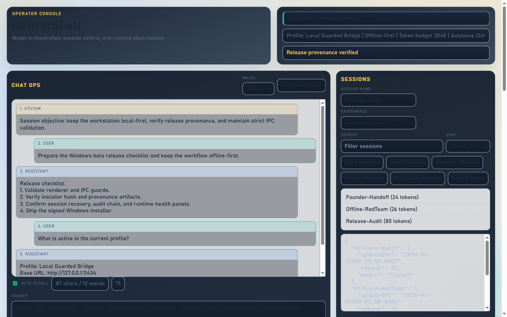
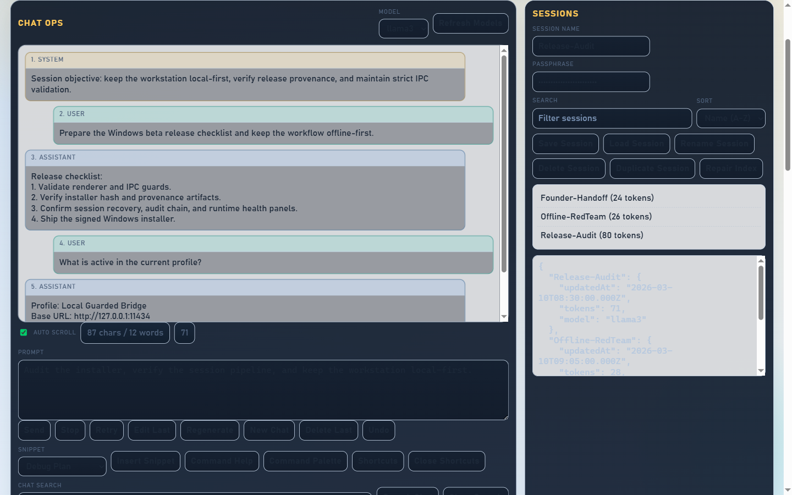
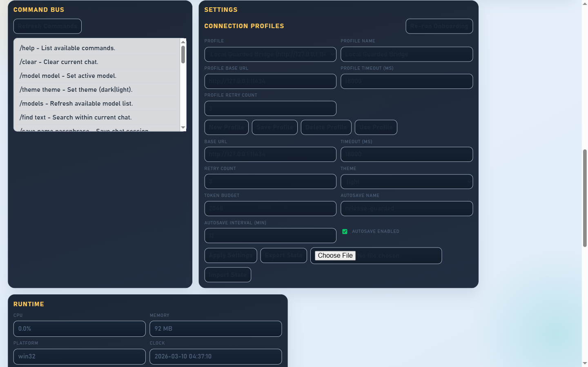
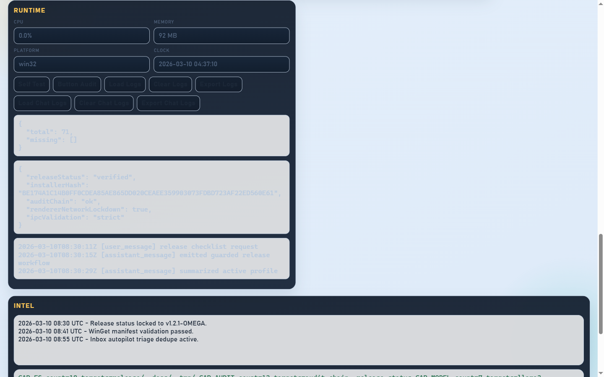

Harder boundaries
NeuralShell prioritizes process separation and constrained IPC instead of treating the desktop as a wide-open scripting surface.
Public beta // v1.2.1-OMEGA
NeuralShell is a desktop workstation for developer and operator workflows built around strict IPC validation, offline-first defaults, and verifiable release artifacts.
Why it exists
NeuralShell prioritizes process separation and constrained IPC instead of treating the desktop as a wide-open scripting surface.
Build status, release manifests, checksums, and signature verification are surfaced as first-class artifacts, not afterthoughts.
Chat, sessions, profiles, commands, runtime panels, and beta issue intake are organized into one intentional desktop control surface.
Product surface




Release trail